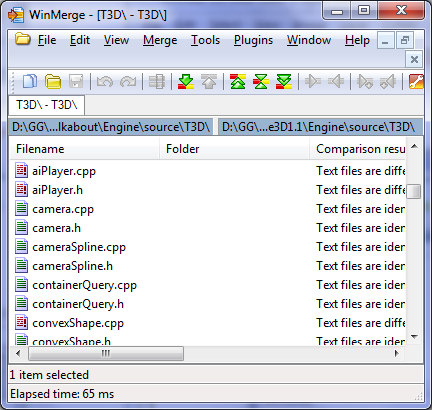
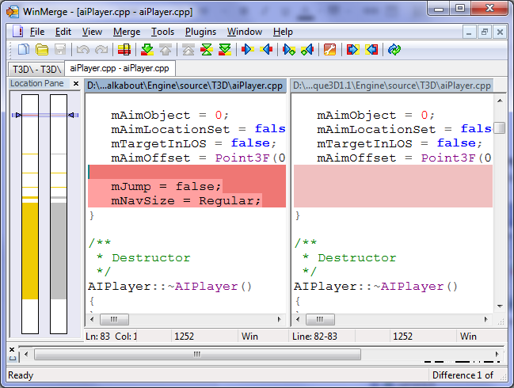

INSTALLATION GUIDE
- Introduction
- Directory structure
- Easy install (new project)
- Installing with WinMerge (existing project)
Introduction
This guide will walk you through the process of installing Walkabout into Torque 3D. Walkabout is a complex product and requires significant additions (and a few modifications) to the engine code. If you follow this guide, you should be fine, but if you need more detailed information on the modifications Walkabout makes, see the Engine Modifications file.
If you're installing Walkabout into a new project that you haven't started to modify already, you're in luck: your installation should be very simple. Follow the guide in the Easy install section below.
If you've made source code or script changes already, however, you should install a program like WinMerge, which will let you visually merge the differences between your code and Walkabout's code. Follow the instructions in the Installing with WinMerge section below.
Directory structure
In the instructions below, I want to make as few assumptions as I can about where you've installed Torque and how your projects are laid out. With that in mind, here are some abbreviations I will use:
| Abbreviation | Explanation | Example |
|---|---|---|
| install directory | The location you installed Torque 3D. | C:\Torque\Torque 3D 1.1 Final |
| engine directory | The location of Torque's engine source files. | C:\Torque\Torque 3D 1.1 Final\Engine\source |
| project directory | The location of the project you'd like to install Walkabout to. | C:\Torque\Torque 3D 1.1 Final\My Projects\SuperFunGame |
| game directory | The location of your project's game folder. | C:\Torque\Torque 3D 1.1 Final\My Projects\SuperFunGame\game |
| Walkabout | The folder that contains your Walkabout download. | C:\Users\Me\Downloads\Walkabout R1\Torque 3D 1.1 Final |
Easy install (new project)
If you're working with a new T3D install (blank project based on Full or Empty template), then you will be able to simply copy over all the files in your Walkabout download and overwrite the existing ones. To install Walkabout in a new T3D project, do the following:
- Copy Walkabout/Engine/source to engine directory and select 'Copy and Replace' for all items when prompted.
- Copy Walkabout/Engine/lib to engine directory.
- Copy Walkabout/game to game directory and select 'Copy and Replace' for all items when prompted.
- Copy Walkabout/Tools to install directory
- In project directory/buildFiles/config, open projectCode.conf with a regular text editor
(Notepad, Notepad++, and WordPad should be fine. Do not use Microsoft Word, OpenOffice, or other word processors!).
After these lines:
Add this:// Here is an example of how to include your project specific code // In this case all the code in the "custom" folder in your project's source directory would be added // addSrcDir('../source/custom');
includeModule( 'walkabout' );
- In project directory, double-click on generateProjects.bat.
- Recompile the engine.
Installing with WinMerge (existing project)
If you have already made script and source code changes to Torque 3D in your own project, you'll need to be a bit more careful when you integrate Walkabout, to avoid its changes overwriting your own changes!
Once you've installed WinMerge or the merging tool of your choice, follow the steps below. Note that instructions will assume you are using WinMerge - if your merge tool has differences, you'll need to work them out yourself!
First, compare Walkabout/source to engine directory. If there is a file with differences, double-click it to view and edit them.
Viewing differences in the T3D directory.
Once inside a file, press Alt+Down to quickly scroll to the next difference, and Alt+Right to copy from the left-hand-side (Walkabout file) to the right-hand-side (your engine file).
Editing conflicts inside a file.
Next, compare Walkabout/game to game directory. Copy over files that don't exist in your tree, and edit any conflicts within existing files.
Finally, follow steps 3-6 from Easy install. Note that step 5 will rewrite your Visual Studio project files, so if you've modified them, you will need to redo those modifications.